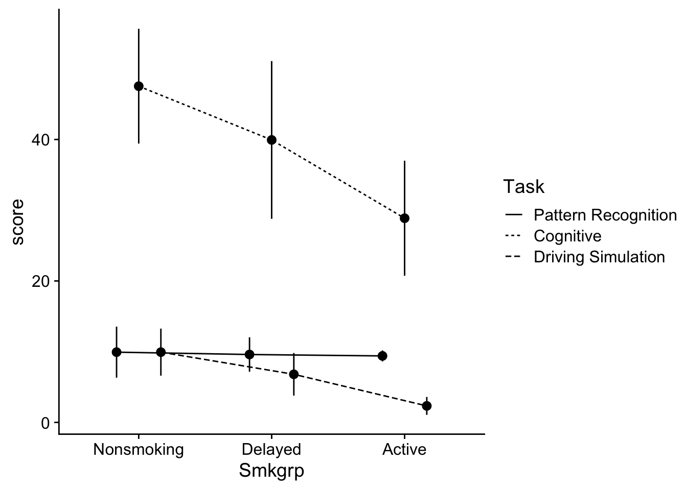

pacman::p_load(psych, tidyverse, cowplot, emmeans, ez)37 Factorial ANOVA - Post hoc analysis of Main effects
In the last walkthrough, analyzed a 2×2 ANOVA focusing on our main effects. Because each of our factors only had two levels, there was no need to follow up on significant main effects with pairwise post hoc analysis. In this walkthough we will take a look at examples where our main effects have 3 or more levels, and demand a post-hoc analysis. For now, let’s try another example. First let’s bring in the necessary packages:
37.1 Example: A 2 × 3 ANOVA
Thirty-six college students were randomly assigned to 3 groups (N=12). Students in each group were asked to watch and take notes on a 50 min lecture. One week later all students were tested on the content of their lectures, and their scores were compared. Groups differed by the lecture’s subject matter, where:
- 1 = Physics lecture
- 2 = Social Science lecture
- 3 = History lecture
The lectures were presented in two manners
1 = via computer
2 = standard method, lecturer in a lecture hall
The researchers hypothesized that students that learned the material in the standard lecture would perform better than those that learned via computer.
dataset_no_inter <- read_csv("https://raw.githubusercontent.com/tehrandavis/graduate_statistics/main/practice_datasets/factorial_ANOVA_dataset_no_interactions.csv")Rows: 36 Columns: 4
── Column specification ────────────────────────────────────────────────────────
Delimiter: ","
chr (2): Lecture, Presentation
dbl (2): Score, PartID
ℹ Use `spec()` to retrieve the full column specification for this data.
ℹ Specify the column types or set `show_col_types = FALSE` to quiet this message.dataset_no_inter$Lecture <- recode_factor(dataset_no_inter$Lecture, "1"="Phys","2"="Soc","3"="Hist")
dataset_no_inter$Presentation <- recode_factor(dataset_no_inter$Presentation, "1"="Comp","2"="Stand")
summary(dataset_no_inter) Lecture Presentation Score PartID
Phys:12 Comp :18 Min. :18.00 Min. : 1.00
Soc :12 Stand:18 1st Qu.:26.75 1st Qu.: 9.75
Hist:12 Median :35.50 Median :18.50
Mean :35.44 Mean :18.50
3rd Qu.:42.50 3rd Qu.:27.25
Max. :53.00 Max. :36.00 37.1.1 Building the ANOVA model
I’m going to use lm().
aov_model <- lm(Score~Presentation + Lecture, data = dataset_no_inter)37.1.2 Testing assumptions
37.1.3 visual
aov_model %>% performance::check_model(panel=FALSE)aov_model %>% performance::check_normality()OK: residuals appear as normally distributed (p = 0.887).aov_model %>% performance::check_homogeneity()Warning: Variances differ between groups (Bartlett Test, p = 0.040).The model checks both for normality of residuals but fails homogeneity of variance. Following upon given the robustness of ANOVA (3x rule):
dataset_no_inter %>%
group_by(Lecture, Presentation) %>%
summarise(mean = mean(Score),
var = var(Score))`summarise()` has grouped output by 'Lecture'. You can override using the
`.groups` argument.# A tibble: 6 × 4
# Groups: Lecture [3]
Lecture Presentation mean var
<fct> <fct> <dbl> <dbl>
1 Phys Comp 46 48.8
2 Phys Stand 34 121.
3 Soc Comp 40 23.2
4 Soc Stand 23.7 7.47
5 Hist Comp 38 19.2
6 Hist Stand 31 106. Potential issues, but moving on.
37.1.4 Interaction plot
Let’s plot the data. You’ll note in this plot I’m adding some code to get it into better APA shape. More on this in the next walkthrough. For now just focus on content.
# setting original parameters
p <- ggplot2::ggplot(data = dataset_no_inter, mapping=aes(x=Lecture,y=Score,group=Presentation))
# making a basic line plot
line_p <- p + stat_summary(geom="pointrange",fun.data = "mean_se", size=0.75, position=position_dodge(.25), aes(shape=Presentation)) +
stat_summary(geom = "line", fun = "mean", position=position_dodge(.25), aes(linetype=Presentation))
# adding APA elements
line_p <- line_p + theme(
axis.title = element_text(size = 16, face = "bold", lineheight = .55),
axis.text = element_text(size = 12),
legend.title = element_text(size = 12, face = "bold"),
legend.position = c(.75,.9)) +
xlab("Lecture type") +
ylab ("Performance score") +
theme(plot.margin=unit(c(.25,.25,.25,.25),"in")) +
theme_cowplot()
show(line_p)
37.1.5 Testing the ANOVA
aov_model %>% sjstats::anova_stats() %>%
select("term","df","statistic","p.value","partial.etasq")term | df | statistic | p.value | partial.etasq
-------------------------------------------------------
Presentation | 1 | 22.670 | < .001 | 0.415
Lecture | 2 | 3.779 | 0.034 | 0.191
Residuals | 32 | | | 37.2 post hoc analysis
Admittedly, moving on to this step will ultimately be qualified by the presence of interactions (next week). For now, note that if you don’t have an interaction, you may simply proceed to run post-hoc analyses on any significant main effects in the manner you would with a One-way ANOVA. Easy, peasy, right. One thing to note, you need to make the appropriate multiple comparison corrections. For example, returning to our data with no interaction, we need to test for differences in both the Lecture and Presentation main effects.
Presentation: This one is easy. We only have two levels of
Presentation, so the omnibus \(F\) test tells us that our two groups are different. Nothing else to do here other than note which mean (Computer v. Standard) is greater than the other.Lecture: We have three levels of lecture, so were are going to need to run a post-hoc analysis. In this case, we may call upon our old standbys, Tukey and Bonferroni.
Just as last week, we can use emmeans() to run our post-hoc tests.
For example, to run a Tukey, you need call your ANOVA model. For the sake of clarity let’s rebuild the ANOVA model and save it to aov_model and then run emmeans()
Here I’m saving it to the object aov_model:
aov_model <- lm(Score~Presentation + Lecture, data = dataset_no_inter)From here you may call upon the emmeans() function to derive your posthocs. By itself, emmeans produces the means by levels of the IV(s) listed in its spec= argument. It takes the lm() model as a first argument, and the IVs of interest as the second.
# input your model into the emmeans,
# interested in Lecture
emmeans(aov_model,specs = ~Lecture) Lecture emmean SE df lower.CL upper.CL
Phys 40.0 2.14 32 35.6 44.4
Soc 31.8 2.14 32 27.5 36.2
Hist 34.5 2.14 32 30.1 38.9
Results are averaged over the levels of: Presentation
Confidence level used: 0.95 emmeans() alone gives us the estimated marginal means for each of our levels, to run a post-hoc comparison we then pipe it into pairs() and include the p value adjustment that we would like to make. allows another method for making contrasts (planned and posthoc). If you want to perform a Tukey test follow this procedure you can simply pipe the previous (or save to an object and submit) to pairs():
emmeans(aov_model,specs = ~Lecture) %>% pairs(adjust="tukey") contrast estimate SE df t.ratio p.value
Phys - Soc 8.17 3.03 32 2.696 0.0291
Phys - Hist 5.50 3.03 32 1.815 0.1807
Soc - Hist -2.67 3.03 32 -0.880 0.6565
Results are averaged over the levels of: Presentation
P value adjustment: tukey method for comparing a family of 3 estimates In this case it appears that our Tukey does reveal differences between means, when performance of those getting Physical Science Lectures is greater than both History and Social, but Social and History are not difference from one another.
Note that you may call other p-value adjustments using these methods:
emmeans(aov_model,specs = ~Lecture) %>% pairs(adjust="bonferroni") contrast estimate SE df t.ratio p.value
Phys - Soc 8.17 3.03 32 2.696 0.0333
Phys - Hist 5.50 3.03 32 1.815 0.2365
Soc - Hist -2.67 3.03 32 -0.880 1.0000
Results are averaged over the levels of: Presentation
P value adjustment: bonferroni method for 3 tests 37.3 What about planned contrasts?
You need to be careful when running planned contrasts in factorial ANOVA. In general I would recommend only running planned contrasts on a single main effect, or a planned contrast on the effects of one of your factors at a single level of your other (though you still need to proceed with caution here).
For example, using the data from the last section, I would only run a planned contrast related to the main effect of Lecture Type, or a contrast of Lecture Type means only in Computer presentation conditions (or Standard presentation). DO NOT, I repeat DO NOT run contrasts that go across levels of your other factors. Well, truthfully, you can do whatever you want, but you may find that your ability to meaningfully interpret your results in such cases is extremely limited.
We can run planned contrasts using emmeans() as well. In this case, we need to specify the contrasts.
First we need to obtain the emmeans() of the model including all cells (all factors). Using aov.model from the previous example:
emmeans(aov_model, specs = ~Lecture+Presentation) Lecture Presentation emmean SE df lower.CL upper.CL
Phys Comp 45.9 2.47 32 40.9 50.9
Soc Comp 37.7 2.47 32 32.7 42.8
Hist Comp 40.4 2.47 32 35.4 45.4
Phys Stand 34.1 2.47 32 29.1 39.1
Soc Stand 25.9 2.47 32 20.9 31.0
Hist Stand 28.6 2.47 32 23.6 33.6
Confidence level used: 0.95 OK. From here let’s build two custom contrasts. First, let’s do the Lecture contrast on the main effect. In this case let’s assume I want to contrast Phys with the combined other two conditions. Using the output above, I identify which rows contain Phys and I ensure that the summation of those rows is 1. In this case there are two rows, the first and the fourth, and each gets 0.5. My remaining conditions must also equal -1. In this case there are four, so each is -0.25. Following the output above, then my contrast matrix is:
From here I simply call contrast() with my contrast matrix as an argument. So the entire pipe goes from:
emmeans(aov_model, specs = ~Lecture + Presentation) %>% contrast(lecture_contrast) contrast estimate SE df t.ratio p.value
Phys v. Soc + Hist 6.83 2.62 32 2.604 0.0138Assuming I wanted to perform a set of orthogonal contrasts:
Phys v. Soc and Hist and
Soc v Hist
# build the contrast matrix
contrast_matrix <- list("Phys v. Soc + Hist" = c(.5,-.25,-.25,.5,-.25,-.25),
"Soc v Hist" = c(0, -.5, .5, 0, -.5, .5)
)
# run the contrasts
emmeans(aov_model, specs = ~Lecture + Presentation) %>% contrast(contrast_matrix) contrast estimate SE df t.ratio p.value
Phys v. Soc + Hist 6.83 2.62 32 2.604 0.0138
Soc v Hist 2.67 3.03 32 0.880 0.3853In both cases, my p-values are unadjusted. I can add an adjustment to the contrast() argument like so:
# tukey is most common
emmeans(aov_model, specs = ~Lecture + Presentation) %>% contrast(contrast_matrix, adjust = "tukey")Note: adjust = "tukey" was changed to "sidak"
because "tukey" is only appropriate for one set of pairwise comparisons contrast estimate SE df t.ratio p.value
Phys v. Soc + Hist 6.83 2.62 32 2.604 0.0275
Soc v Hist 2.67 3.03 32 0.880 0.6222
P value adjustment: sidak method for 2 tests # or bonferroni is most conservative
emmeans(aov_model, specs = ~Lecture + Presentation) %>% contrast(contrast_matrix, adjust = "bonferroni") contrast estimate SE df t.ratio p.value
Phys v. Soc + Hist 6.83 2.62 32 2.604 0.0277
Soc v Hist 2.67 3.03 32 0.880 0.7706
P value adjustment: bonferroni method for 2 tests # or holm is more liberal
emmeans(aov_model, specs = ~Lecture + Presentation) %>% contrast(contrast_matrix, adjust = "holm") contrast estimate SE df t.ratio p.value
Phys v. Soc + Hist 6.83 2.62 32 2.604 0.0277
Soc v Hist 2.67 3.03 32 0.880 0.3853
P value adjustment: holm method for 2 tests 37.4 More examples: a 3 × 3 ANOVA
In the previous example we focused in the 2 × 3 scenario for ease. Let’s look at how we might deal with a 3 × 3 example. Let’s use our dataset from the previous walkthrough involving a 3 (Smoking group) by 3 (Task) design. Let’s run another example using this data. Let’s use this as a chance to brush up on creating APA visualizations:
dataset <- read_delim("https://www.uvm.edu/~statdhtx/methods8/DataFiles/Sec13-5.dat",
"\t", escape_double = FALSE,
trim_ws = TRUE)Rows: 135 Columns: 4
── Column specification ────────────────────────────────────────────────────────
Delimiter: "\t"
dbl (4): Task, Smkgrp, score, covar
ℹ Use `spec()` to retrieve the full column specification for this data.
ℹ Specify the column types or set `show_col_types = FALSE` to quiet this message.dataset$PartID <- seq_along(dataset$score)
dataset$Task <- recode_factor(dataset$Task,
"1" = "Pattern Recognition",
"2" = "Cognitive",
"3" = "Driving Simulation")
dataset$Smkgrp <- recode_factor(dataset$Smkgrp,
"3" = "Nonsmoking",
"2" = "Delayed",
"1" = "Active")
dataset# A tibble: 135 × 5
Task Smkgrp score covar PartID
<fct> <fct> <dbl> <dbl> <int>
1 Pattern Recognition Active 9 107 1
2 Pattern Recognition Active 8 133 2
3 Pattern Recognition Active 12 123 3
4 Pattern Recognition Active 10 94 4
5 Pattern Recognition Active 7 83 5
6 Pattern Recognition Active 10 86 6
7 Pattern Recognition Active 9 112 7
8 Pattern Recognition Active 11 117 8
9 Pattern Recognition Active 8 130 9
10 Pattern Recognition Active 10 111 10
# ℹ 125 more rows37.4.1 Interaction plot
# line plot
ggplot(data = dataset, mapping=aes(x=Smkgrp,y=score,group=Task)) +
stat_summary(geom="pointrange",
fun.data = "mean_cl_normal",
position=position_dodge(.5)) +
stat_summary(geom = "line",
fun = "mean",
position=position_dodge(.5),
aes(linetype=Task)) +
theme_cowplot()
Before continuing it might be useful to get a feel for whats going on in the dataset. In this case, both the performance on the Cognitive and Driving simulation tasks seems to be impacted by the degree of smoking. However the Pattern recognition task does not appear to be affected.
Another way of viewing this is that scores on the Cognitive task tended to be greater than the other two Task conditions. Let’s hold onto our impressions of the data and move on.
37.4.2 ANOVA model
As before we can build our ANOVA model and test it against the requisite assumptions:
aov_model <- lm(score~Smkgrp+Task,data = dataset)aov_model %>% performance::check_model(panel=F)aov_model %>% performance::check_normality()Warning: Non-normality of residuals detected (p < .001).aov_model %>% performance::check_homogeneity()Warning: Variances differ between groups (Bartlett Test, p = 0.000).As in the last walkthrough we’ll ignore the issues with our assumption checks
aov_model %>% sjstats::anova_stats() %>%
dplyr::select(c("term","df","statistic","p.value","partial.etasq"))term | df | statistic | p.value | partial.etasq
-----------------------------------------------------
Smkgrp | 2 | 7.935 | 0.001 | 0.109
Task | 2 | 125.398 | < .001 | 0.659
Residuals | 130 | | | Here we have significant main effects for Smkgrp and Task. We’ll need to run seperate post-hoc analyses for each of our observed effects (given that both factors have 3 levels). Before moving on, I would recommend writing out the main points of this table to refer to later in your write up.
main effect for Task, \(F\) (2, 130) = 125.40, \(p\) < .001, \(n_p^2\) = .66.
main effect for Smoking Group, \(F\) (2, 130) = 7.94, \(p\) = .001, \(n_p^2\) = .11
37.5 Post-hoc analysis
37.5.1 Task
main_effect_Task <- emmeans(aov_model, ~Task) %>% pairs(adjust="tukey")
main_effect_Task contrast estimate SE df t.ratio p.value
Pattern Recognition - Cognitive -29.13 2.25 130 -12.927 <.0001
Pattern Recognition - Driving Simulation 3.29 2.25 130 1.459 0.3139
Cognitive - Driving Simulation 32.42 2.25 130 14.386 <.0001
Results are averaged over the levels of: Smkgrp
P value adjustment: tukey method for comparing a family of 3 estimates The results confirm that overall, Cognitive task performance was greater than the other two conditions. To get the descriptive stats for these contrasts, we can use summarySE, only specifying Task as our grouping viariable:
Rmisc::summarySE(data = dataset, measurevar = "score", groupvars = "Task") Task N score sd se ci
1 Pattern Recognition 45 9.644444 4.513392 0.6728168 1.355973
2 Cognitive 45 38.777778 18.055330 2.6915297 5.424422
3 Driving Simulation 45 6.355556 5.701497 0.8499290 1.71291937.5.2 Smkgrp
main_effect_Smkgrp <- emmeans(aov_model, ~Smkgrp) %>% pairs(adjust="tukey")
main_effect_Smkgrp contrast estimate SE df t.ratio p.value
Nonsmoking - Delayed 3.69 2.25 130 1.637 0.2339
Nonsmoking - Active 8.93 2.25 130 3.964 0.0004
Delayed - Active 5.24 2.25 130 2.327 0.0556
Results are averaged over the levels of: Task
P value adjustment: tukey method for comparing a family of 3 estimates and to get these descriptive stats, we run summarySE using only Smkgrp as our grouping variable:
Rmisc::summarySE(data = dataset, measurevar = "score", groupvars = "Smkgrp") Smkgrp N score sd se ci
1 Nonsmoking 45 22.46667 20.36218 3.035414 6.117475
2 Delayed 45 18.77778 19.35892 2.885857 5.816063
3 Active 45 13.53333 14.13024 2.106412 4.24519437.6 Example write up
Let’s use this space to provide an example write-up for our factorial ANOVA. To do this I need to refer back to values I generated in my ANOVA table, my post-hoc tests, and my descriptive statistics above.
To test our hypothesis we ran a 3 (Task) × 3 (Smoking Group) ANOVA on cognitive performance scores. Our ANOVA revealed a significant main effect for Task, \(F\) (2, 130) = 125.40, \(p\) < .001, \(n_p^2\) = .66. Post hoc analysis of Task revealed that participants scored higher in the Cognitive group (\(M±SE\) = 38.78 ± 2.69) than the Pattern Recognition (9.64 ± 0.67 ) and Driving Simulator (6.36 ± 0.84) groups (\(ps\) < .05).
Our analysis also revealed a main effect for Smoking Group, \(F\) (2, 130) = 7.94, \(p\) = .001, \(n_p^2\) = .11. Post hoc analysis of Smoking Group revealed participants scored higher in the Nonsmoking group than the Active group (\(p\) < .05). No other statistically significant group differences were observed.